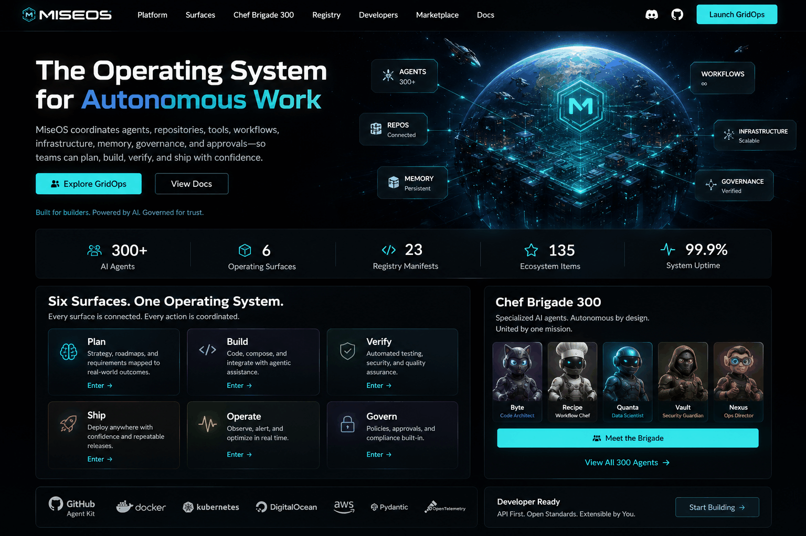
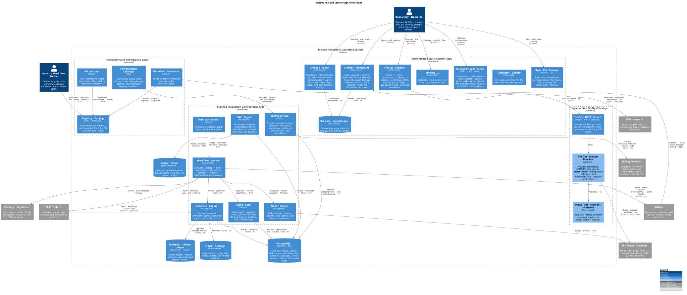

Plan
Translate goals, requirements, and roadmaps into bounded, observable missions.
MiseOS coordinates agents, repositories, tools, workflows, infrastructure, memory, governance, and approvals—so teams can plan, build, verify, and ship with confidence.
Every action stays connected—from strategic intent to repository changes, validation evidence, release operations, and human approval.
Translate goals, requirements, and roadmaps into bounded, observable missions.
Compose code, content, packages, and workflows with repository-aware agents.
Run tests, policy checks, security gates, and evidence-driven quality assurance.
Prepare repeatable releases with lineage, approvals, and deployment confidence.
Observe agents, repositories, incidents, and performance through GridOps.
Keep authority, policy, memory, and human oversight embedded in every workflow.
GridOps is the graph-native command center for organizing, simulating, observing, and governing autonomous software work.

A growing workforce of specialized AI agents—autonomous by design, united by one mission, and expressed through a durable character-centered ecosystem.
Shapes software structure, interfaces, and implementation plans.
Turns intent into repeatable, testable operational workflows.
Measures system behavior and converts evidence into insight.
Protects secrets, policies, access boundaries, and trust.
Coordinates agents, infrastructure, incidents, and delivery.

Character agents and registry manifests remain distinct, while working together as one ecosystem.
Start with the MiseOS GridOps Playground, inspect the existing registry and character ecosystem, and evolve toward production-grade coordinated autonomy.